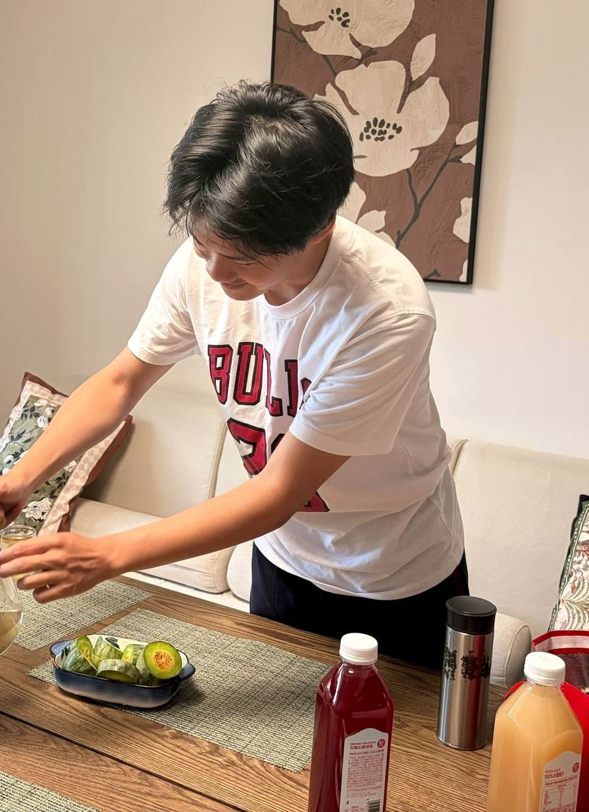

✳
00 / A PERSONAL EXHIBITION
你好，我是
Toby.
把好奇写成代码。
也给生活，留一点即兴。
PROGRAMMING × HCI × AFFECTIVE COMPUTING

01 / FOLLOW THE CURIOSITY
把好奇，
写成代码。
我是 Toby，一名热爱编程与计算机的在读学生。喜欢拆解问题，也喜欢把日常需求写成小工具，在动手实践中学习。
- 写代码
- 做工具
- 拆解问题
THINK → BUILD → LEARN → REPEAT
make it
happen.
不问能不能，先动手。
02 / HCI × AFFECTIVE COMPUTING
探索交互，
理解感受。
现在学习和研究人机交互（HCI）与情感计算，关注交互体验，以及技术如何感知、理解和回应情绪。
我的探索还在继续：读论文、拆解思路，再把想法实现成小工具。
曾获校级二等奖学金
~
想法，开始成形 ↗
A LITTLE MORE HUMAN.
↗ PAPER HIGHLIGHTSarXiv / HTML
READ BETWEEN THE LINES
A little more clarity.
A little less noise.
A little less noise.
问题机制证据局限
03 / IDEAS BECOME THINGS
01 / READING TOOLPaper
Highlights↗
让论文阅读，多一点线索。面向 arXiv HTML 的浏览器扩展，配合兼容的模型 API，辅助识别问题、机制、证据与局限。
- 浏览器扩展
- 论文阅读
CODE VISUALIER● ● ●
1 items = [2, 4, 6]
2 total = 0
3 for item in items:
4 total += item
VARIABLE SNAPSHOT
item4
total6
01020304
04 / MAKE THE INVISIBLE VISIBLE
02 / DEVELOPER TOOLCode
Visualier↗
不只看代码，也看看它如何运行。把执行步骤与变量快照放在一起，让变化更直观；Python 与 JavaScript 可在客户端运行。
- 代码可视化
- Python / JS
WORDS, ONE AT A TIME↗
A LITTLE DAILY PRACTICEcuriosity /ˌkjʊəriˈɒsəti/n. 好奇心；求知欲
Stay curious.
Keep discovering.
分级学习FSRS 复习
01 / 07你好，世界。
滚动探索 →